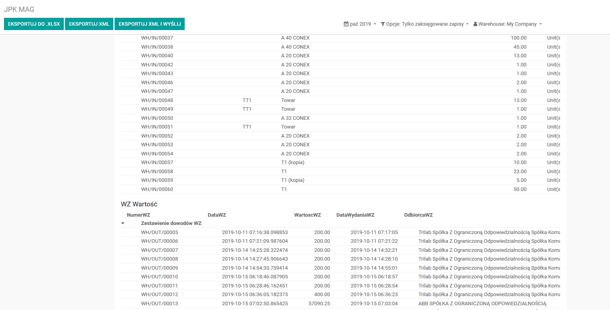

Moduł do generowania plików JPK MAG. Wraz z modułem Trilab JPK Transfer zapewnia pełną obsługę
procesu sprawozdawczość JPK MAG.

Mechanizm raportujący działa sposób analogiczny do Raportów Finansowych
i umożliwia:
- podgląd danych,
- wygenerowanie danych do Excel,
- wygenerowania pliku XML,
- wygenerowanie pliku XML z utworzeniem wysyłki w module JPK Transfer.
Parametrami uruchomieniowymi są:
UWAGA:
- Moduł wymaga wcześniejszej instalacji modułu Trilab JPK Base.
- Opcjonalny moduł Trilab JPK Transfer pozwala na wysłanie plików JPK z poziomu Odoo.
- Moduł przeznaczony dla wersji Enterprise.
Przyjęta zasada kwalifikacji transakcji (może to być zmienione/dostosowane pod potrzebu konkretnej parametryzacji Odoo):
- PZ - wszystkie transakcje o kodzie typu transakcji "incoming" oraz uzupełnionym kontrahencie na danej operacji
- WZ - wszystkie transakcje o kodzie typu transakcji "outgoing" oraz uzupełnionym kontrahencie na danej operacji
- RW - wszystkie transakcje o kodzie typu transakcji "outgoing" oraz braku uzupełnionego kontrahentana danej operacji
- MM - wszystkie transakcje o kodzie typu transakcji "internal"
Wspiera wersję 12 Odoo.
English Description:
Module for generating JPK MAG XML files. Together with the Trilab JPK Transfer module provides
full support for the JPK MAG reporting process.
The data selection mechanism is flexible and fully parametrised.
The reporting mechanism works in similar to to Financial Reports and enables:
- data preview,
- generating data for Excel,
- generate an XML file,
- generating an XML file with shipping creation in JPK Transfer module.
The parameters are:
Warning:
- This module requires prior installation of the Trilab JPK Base module.
- Module for Enterprise version.
- Optional module Trilab JPK Transfer allows to send JPK files directly from Odoo.
Transaction maping rules (this can be changed / adapted to the needs of a specific Odoo setup):
- PZ - all transactions with transaction type code "incoming" and entered partner datas for operations
- WZ - all transactions with the transaction type code "outgoing" and entered partner datas for operations
- RW - all transactions with the transaction type code 'outgoing' and not entered partner datas for operations
- MM - all transactions with transaction type code "internal"
Supports Odoo version 12.
Changelog
-
1.2 12/10/2020
unify with base
-
1.0 17/09/2019
release module on odoo